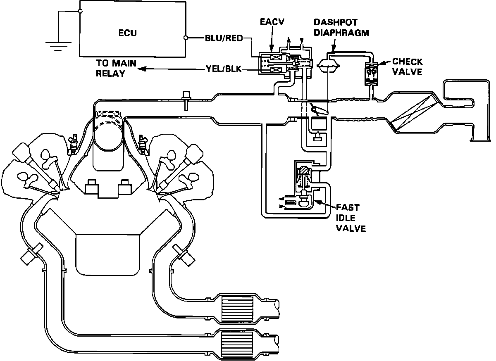
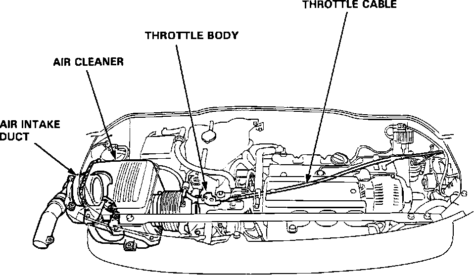

Fuel Delivery and Air Induction: Locations
Air Intake System:

FAST IDLE VALVE
Top rear of the intake manifold.
Air Intake System:

AIR CLEANER
Left side of engine compartment.
AIR INTAKE DUCT
Left side of engine compartment, left of air cleaner.
CHAMBER VOLUME CONTROL SYSTEM
Integral part of the intake manifold, (not shown). Control diaphragm located on the left rear of the intake manifold.
THROTTLE BODY
Left of intake manifold.
THROTTLE CABLE
Routed from front of the intake manifold along left side of the engine compartment to the accelerator pedal.